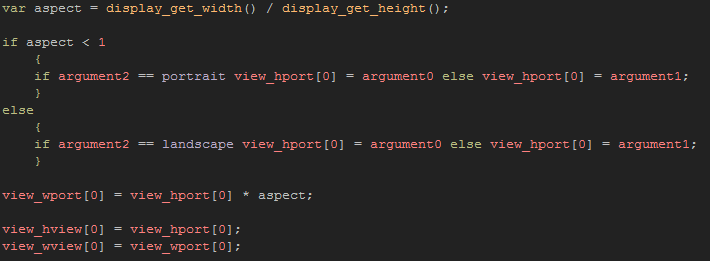
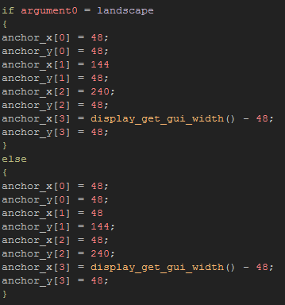
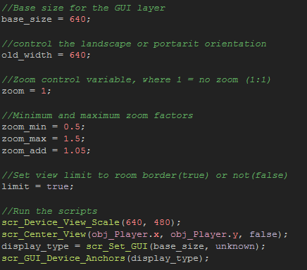
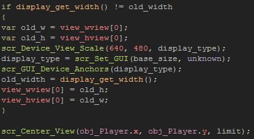

Tutorial
Page 14 of 15
Devices Part IV
This final part of the tutorial is going to take everything that we have learned so far and use it to create a view into our game room that scales to the device screen, zooms in and out and switches
from landscape to portrait (and back again) without any problems.
To start with, set the Global Game Settings orientation lock settings to permit both possible orientations, then move the room rm_Devices_3 to the top of the asset list in the
resource tree. This room is large and if you try and test the game at the moment, you will see that it is stretched to fit the device display, making it almost impossible to see what is happening. To fix this
we need to create a new script...
Create a new script asset and call it scr_Device_View_Scale and then copy the following code:

This code looks similar to previous scripts we have written, but here we also use the "landscape" and "portrait" constants we made on page 10 of this tutorial for "floating" GUI elements. This is important as
we want this code to scale correctly depending on the orientation of the device, which means that the width and height arguments we pass will need to be reversed. We also set the view width and height with
this code, although we will subsequently modify these values with the zoom script that we also made for Windows.
For this final example, we are also going to generate a dynamic HUD with buttons that change position based on the orientation, so let's also create a script to control the "anchor points" of the HUD on the screen.
Make another new script asset called scr_GUI_Device_Anchors with the following:

This simply checks the width against the height and corrects the position of the buttons we are going to draw based on that.
Now to pull everything we have learned in this tutorial, along with some of the scripts that we have previously made, in one object to control everything!
Open the object obj_Devices_View_Scale and add this into the Create Event:

The first two variables are the base size for the GUI layer, which will be used with the script we made earlier, and the old width, which will be used to check for orientation changes. We then create the zoom variables
(again, as we did for previous uses of the zoom scripts) and finally we call the necessary scripts to set up the view.
The first script sets the initial view scale based on our "ideal" values, then the second script centres the view on the player for the start of the game, and then finally we set GUI layer and the initial "anchor" points for
the HUD elements.
Next, we should set up the Step Event to check the orientation of the device at any time and react accordingly with the following code:

Since we are going to also permit the view to zoom in and out we also need to take this into account when rotating the view. If we do not do this, when the device is rotated the view will be reset to the
base resolution and the next time the view zoom buttons are pressed, the view will "jump" to another size. So, we store the current view width and height in some local variables, then run all the necessary scripts
before finally setting the view width and height again, reversing the local variables so that the width becomes the height and vice versa. In this way we ensure that the same zoom aspect is maintained.
The final thing to do is un-comment the Draw GUI event. The code we have here gets the mouse x and y position relative to the GUI and then uses that to compare to the anchor positions of the
buttons that we are drawing to decide whether they are being pressed or not. Note that if the GUI layer was a direct 1:1 fit we could just get the raw mouse position and check that, but due to the fact that the GUI
is being set to a different size, we have to do a bit of percentage maths to get the correct position of the mouse within the GUI layer.
And that's it! We now have a single controller instance that will scale the view to any display size, zoom in and out, and draw a HUD on the GUI layer, as well as do all of this no matter what orientation the device
is in. Take your time to play with this last instance, changing sizes, removing scripts etc... so that you can see how everything fits together in a working game, and how it could be adapted to your needs.
Click on the Next button to go to the next page of the tutorial.